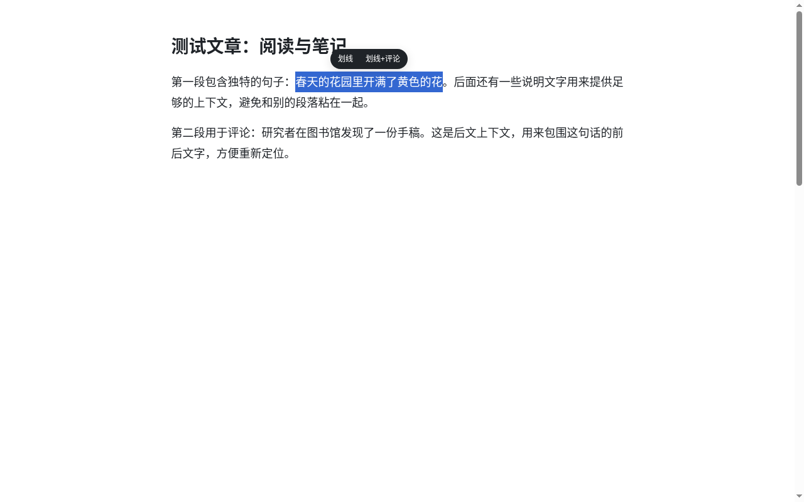
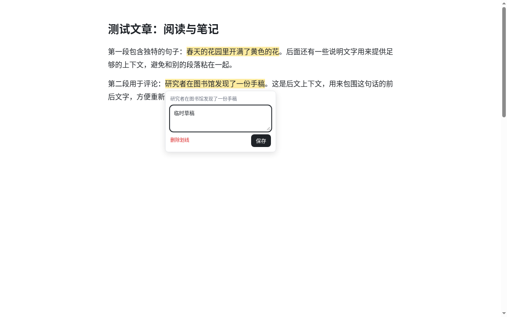
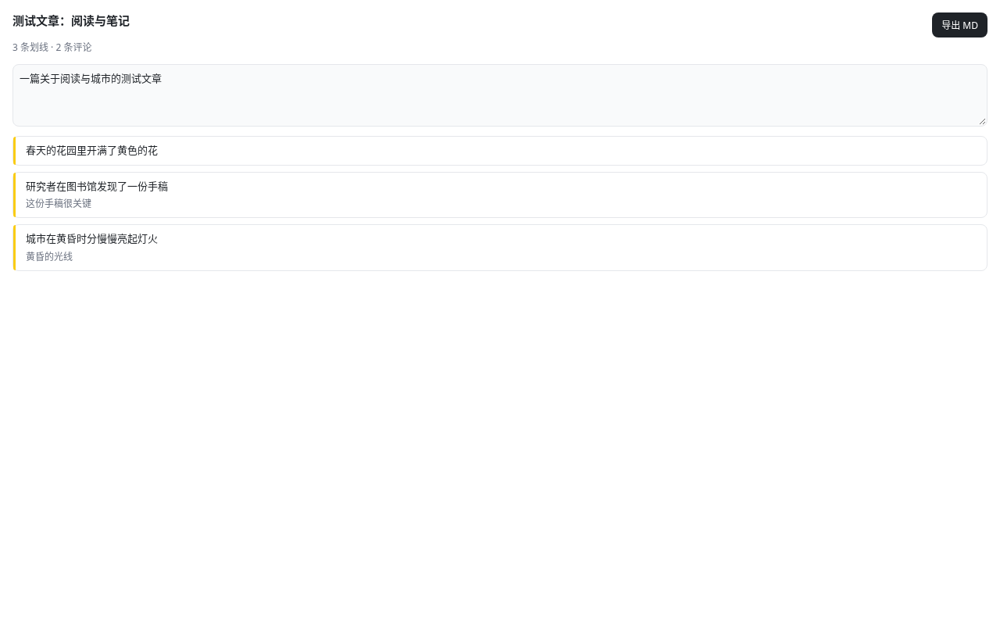
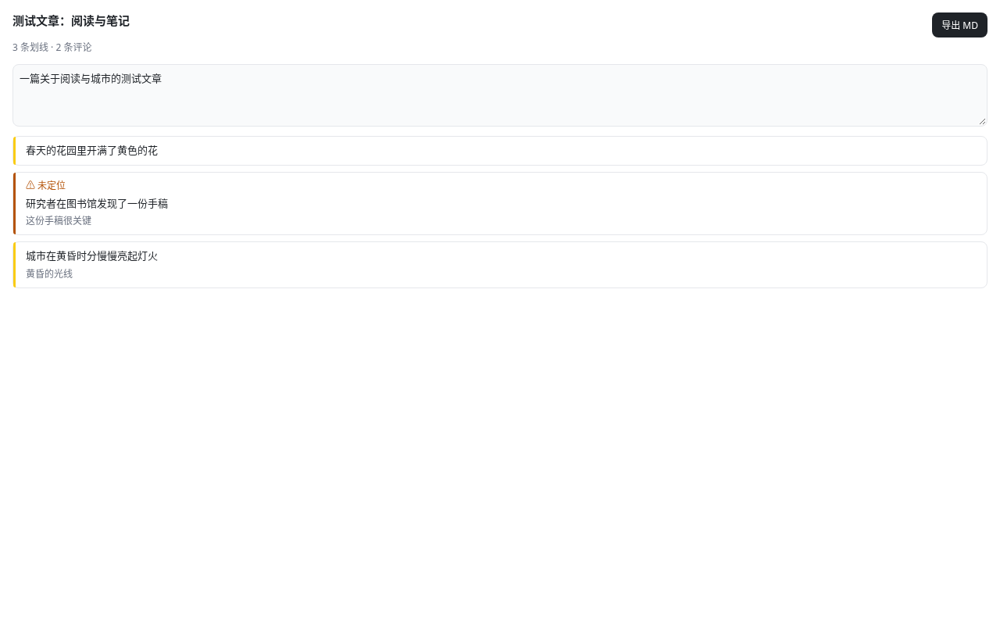

演示视频
约 1 分钟，涵盖划线、评论、摘要、刷新保留和导出。
安装（加载已解压扩展）
- 获取
web-highlight-notes-vX.Y.Z.zip（或在源码目录运行npm run build，产物在dist/）。 - 解压到一个固定目录（之后不要删除或移动它）。
- 在 Chrome 打开
chrome://extensions，打开右上角「开发者模式」。 - 点「加载已解压的扩展程序」，选择解压后的目录。
- 把扩展固定到工具栏；点击图标即可打开侧边栏。
升级时：解压新版本覆盖旧目录，然后在扩展页点「重新加载」。笔记保存在浏览器本地，不会丢失。
划线
在普通网页上选中一段文字，选区旁会出现工具条，点「划线」即可把文字标黄。

在输入框、文本域和可编辑区域中选中文字不会弹出工具条，不会干扰你的输入。
划线 + 评论
工具条上点「划线+评论」，会划线并打开评论气泡。之后点击任意已有划线也能打开气泡，编辑评论或删除划线。

- ⌘/Ctrl + Enter 或「保存」：保存评论
- Esc：关闭气泡，未保存的草稿会保留，下次打开时恢复
写摘要
点击工具栏图标打开侧边栏，顶部是本页摘要输入框。输入时自动保存，失焦或离开页面时立即落盘。

侧边栏还会显示页面标题、「x 条划线 · y 条评论」，以及按正文顺序排列的划线列表；点击某条会滚动到正文对应位置并闪烁提示。
刷新后保留
笔记保存在 chrome.storage.local，按页面 URL（忽略 # 后的部分）区分。刷新或再次打开同一页面时，扩展会用原文和前后约 30 个字的上下文重新定位划线，即使文字跨越多个元素也能找到。
导出 Markdown
在侧边栏点「导出 MD」：笔记会复制到剪贴板，同时下载一个 .md 文件，按钮显示「已复制 ✓」约 1.5 秒。文件包含标题、来源链接、摘要，以及每条划线及其评论。
常见问题
侧边栏里有的划线标着「⚠ 未定位」？

网页正文被修改后，扩展找不到原句时会显示这个标记。这条划线和评论不会丢失，仍会列在侧边栏中并随导出一起带上，只是无法在页面上高亮和跳转。
为什么某些页面不能划线？
Chrome 不允许扩展在 chrome:// 页面、Chrome 网上应用店等特殊页面运行。
笔记会上传吗？
不会。所有数据只保存在本机浏览器中。卸载扩展会清除这些数据，请先导出。